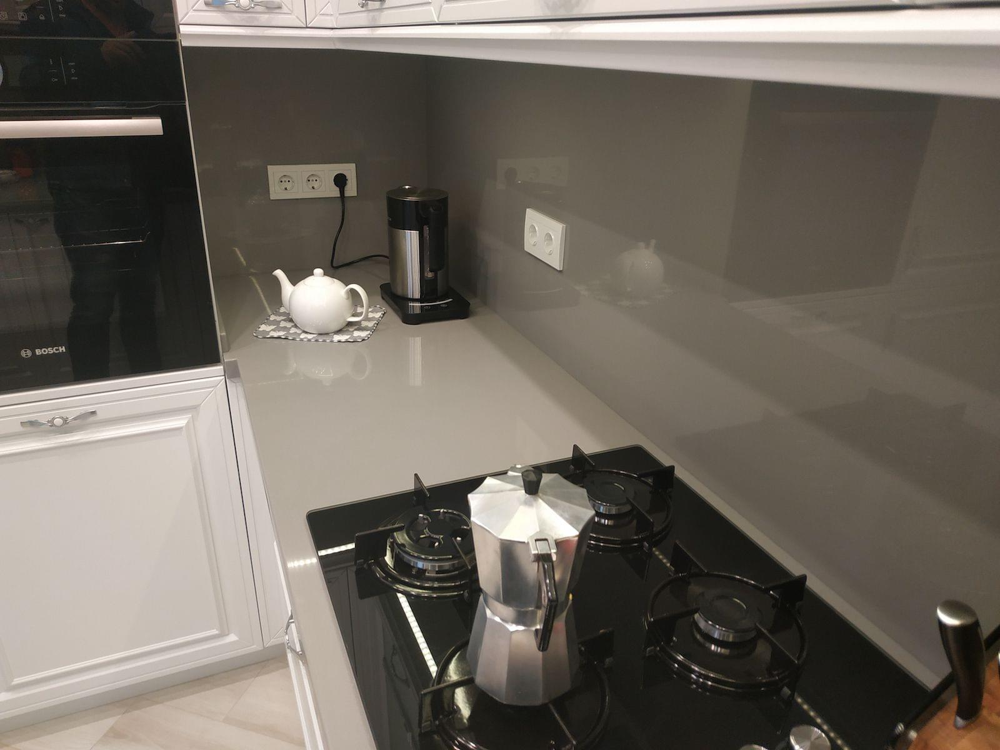
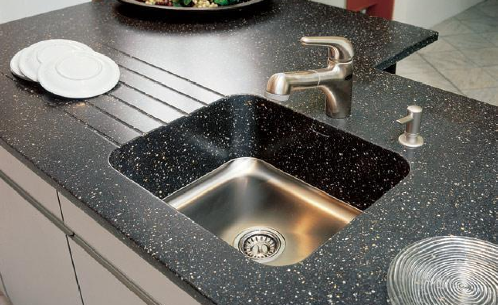
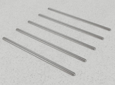

Лицевая кромка — это важный элемент дизайна. Прямоугольные и скругленные, с простыми и профилированными фасками — мы предлагаем разнообразные варианты кромок для оформления торцов столешницы, подоконника,
Пристеночный бортик — необходимый аксессуар столешницы для кухни или ванной комнаты. Без него не обойтись. Бортик закрывает стык между столешницей и стеной. Если бы не эта маленькая деталь, в зазор возле стены обязательно попадала бы влага и грязь.

Стеновые панели
Искусственный камень — отличный материал для стеновых панелей. Сегодня это модно, стильно и очень практично! Панели из искусственного камня не только красивы, они экологичны, долговечны, просты в уходе.

Проточки
Направляющие (проточки) для стока воды очень практичны и одновременно делают дизайн столешницы более выразительным. Располагать их можно параллельно или радиально, как лучики солнца; делать одинаковыми или плести узор из линий разной длины. Эти полезные элементы станут настоящим украшением столешницы, если проявить немного творчества.

Прутки
Подставки и прутки под горячее для столешниц из кварцевого и акрилового камня — не роскошь, а практичное дополнение.
Поверхность из искусственного акрилового камня следует защищать от контакта с очень горячими предметами: кастрюлями, сковородками или чайниками, только что снятыми с плиты.